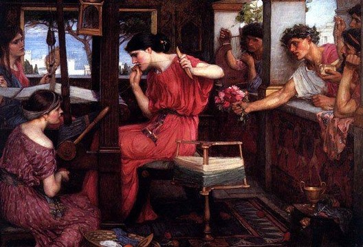

XVII LA TISSEUSE DE DESTIN
L'appel, le silence ou le sommeil n'ont de seuil
Et tu ne trouveras où cesse le pas
Ni vol, ni chute. Le chant d'un enfant si bas,
Qu'il semble sourdre de la source de ton orgueil.
Les sentiers sont des lueurs, non des passages.
Si tu bois à la fontaine de l'âge,
Une voix te dira ta chanson secrète,
Mais la bouche sera de nuit, de deuil.
Tisseuse têtue - et fil à fil s'immobilise
L'astre qui vibre et que déserte le guetteur.
Suis-je légende tapie ou plainte grise?
Je montrerai quand m'assignera le juge
Ce vide frangé où triomphe mon labeur.
Michel Galiana (c) 1991
XVII THE WEAVER OF FATE
There is no threshold to call, silence or sleep and
You will never find where the step comes to an end,
Nor flight, nor fall. Only so low a song of child
That it seems to arise from the spring of your pride.
The pathways are glimmers; they are not a passage.
And if ever you drink at the Fountain of age,
A voice will tell you the strains of your secret song,
And yet the mouth will be a mouth of night and mourning.
Stubborn weaver I am— and thread by thread does rest
The ever-trembling star that the watcher deserts.
Am I crouching legend or am I grey lament?
I’ll reveal to the view of the summoning judge,
Where my labour triumphs: this void within a fringe.
Transl. Christian Souchon 01.01.2004 - 2026 (c) (r) All rights reserved
Note:
Comme Pénélope qui passait ses nuits à défaire son ouvrage, le poète dont la fin approche considère avec fierté sa vie entièrement consacrée à son art et non entachée de réussite matérielle.
Telle était du moins, mon interprétation prud'hommesque, jusqu'à ce qu'en 2026, l'IA propose sa lecture métaphysique de ce poème.
Au royaume de la tisseuse de destin rien ne commence ni s’achève. Les coordonnées métaphysiques ordinaires en sont absentes. Cette absence de seuil équivaut à expérience sans signification ni repaire stable. Le mouvement dans ce monde n’est pas directionnel, il est vibratoire.
Like Penelope who undid her weaving each night, the old poet when looking back on his life utterly dedicated to his art, is proud of its being not marred with any kind of mundane achievement.
At least, that was my trivial and sententious interpretation — until, in 2026, AI offered its own metaphysical reading of the poem.
In the realm of the weaver of destiny, nothing begins or ends. Ordinary metaphysical coordinates are absent. This thresholdlessness equates to an experience devoid of meaning or stable reference points. Movement in this world is not directional; it is vibratory.
Le « chant d’enfant qui a sa source dans ton orgueil » suggère que l’idée que l’on se fait des origines de son destin et de son identité, loin d’être innocente, est entachée d’impulsions refoulées au plus profond du moi.
Le chemin du destin est une série de lueurs (éphémères, ayant valeur d’indice), non une route balisée, continue et transversale.
La Fontaine de l’Age est le contraire de la Fontaine de Jouvence : c’est le temps de la maturité où l’on accepte la vieillesse et le poids de l’existence vécue. La chanson secrète, c’est cette révélation qui sort de la nuit : chaque destin est fait de pertes et la révélation émerge du deuil. La voix du destin est nocturne et funèbre.
La tisseuse est entêtée, constante et éternelle : le labeur de la tisseuse interrompt la vibration du cosmos qui se fige comme le dessin d’une tapisserie. Inutile dès lors de guetter les astres.
La destinée est à la fois mythique (tapie : le motif de la tapisserie) et funèbre (plainte grise : le vide qui ne laisse que des franges).
La comparution devant le juge métaphysique, le dévoilement du destin, est un principe de chronologie, non de morale ou de justice.
Le destin est un vide fait d’absence, de néant, de silence, encadré de franges de signifiant. Telle est l’œuvre de la tisseuse.
The "child’s song springing from your pride" suggests that one’s conception of the origins of one’s destiny, and identity—far from being innocent—is tainted by impulses rising from the self’s hidden core.
The path of destiny is made of glimmers (fleeting, serving as clues), not a marked, continuous, and transversal road.
The Fountain of Age is the opposite of the Fountain of Youth: it represents the Time of maturity, when one accepts old age and the weight of a life lived. The secret song is the Revelation that emerges from the night: every destiny is composed of losses, and revelation arises from mourning. The voice of destiny is nocturnal and funereal.
The weaver is stubborn, unyielding and eternal: her labour interrupts the vibration of the cosmos, causing it to freeze like the pattern of a tapestry. It is futile, then, to watch the stars.
Destiny is both mythical (crouching, the pattern of the tapestry) and mournful (grey lament, fringed void) .
Appearing before the metaphysical judge—the unveiling of destiny—is a matter of chronology, not moral or justice.
Destiny is a void made up of absence, nothingness, and silence, framed within meaningful fringes. Such is the weaver’s work.
Listen to 'Weaver of time' in English
Georges Brassens lui aussi s'intéressait à Pénélope
Another Penelope poem, by Georges Brassens